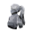
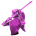

Maelle
A Expedicionária Relutante
"Já tive condolências o suficiente."
Biografia
Maelle é a uma das protagonistas principais de Expedition 33 e irmã
adotiva de Gustave. Embora seja mais solitária e tímida, ela está
ansiosa para voar; sua razão para se juntar à 33ª Expedição aos 16
anos é explorar o mundo fora de Lumière. Ela ficou órfã aos 3 anos e
nunca sentiu que se encaixava em Lumière, mas tem um profundo apreço
e confiança em Gustave.
Na realidade, Maelle é a reencarnação da tela de Alicia Dessendre,
que entra com o objetivo de impedir que Aline e Renoir lutem pelo
destino da tela. A própria Maelle deseja que o mundo da Tela
permaneça intacto e, após se tornar uma pintora, ela ganha o
objetivo de ressuscitar todos e impedir que seu pai e seu irmão
pintado o destruam.
Maelle é a terceira personagem que você encontra. Gustave fica
ansioso para encontrá-la quando ouve que ela está viva, mas Lune
acredita que pode ser uma armadilha.
Atributos Iniciais
- Vida: 195
- Ataque: 105
- Velocidade: 212
- Defesa: 0
- Taxa Crítica: 5%
Habilidades e Gameplay
Maelle empunha uma Rapieira e, de forma semelhante a Lune, suas Habilidades mudam suas posturas. Ativar e entrar em uma Postura diferente concede a Maelle 1 PA, então alternar entre elas é crucial.
- Sem Postura: Nenhum efeito especial.
- Postura Defensiva: Recebe menos dano e ganha 1 PA por Aparar (Parry) ou Esquivar.
-
 Postura Ofensiva: Causa 50% a
mais de dano, mas também recebe 50% a mais de dano.
Postura Ofensiva: Causa 50% a
mais de dano, mas também recebe 50% a mais de dano.
- Postura Virtuosa: Causa 200% de dano.
As habilidades iniciais de Maelle são
Troca Ofensiva, Perfurar e
Faísca.
Usar Troca Ofensiva a coloca na Postura Ofensiva e
aplica "Indefeso" no alvo (+25% de dano recebido). Usar
Faísca ou Perfurar a coloca na
Postura Defensiva.
Várias de suas habilidades aplicam ou são impulsionadas por Queimadura. Além disso, ela é muito eficaz contra inimigos com escudos, pois uma de suas habilidades pode quebrá-los instantaneamente, ganhar PA e conceder um turno extra se o alvo estiver "Indefeso".